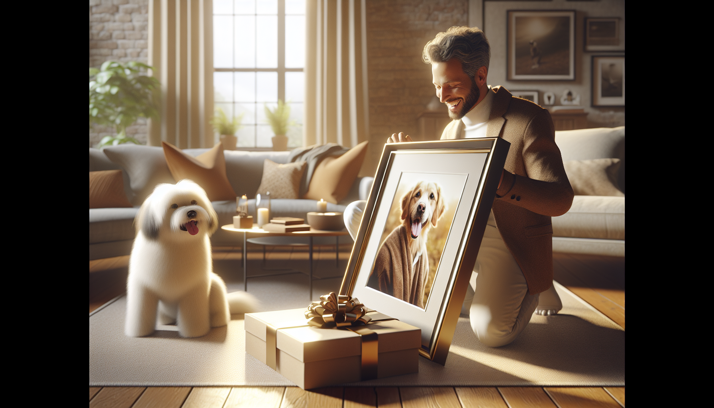

If you have ever shopped for a pet lover, you already know one thing: ordinary gifts rarely feel special enough. Pet owners adore their furry companions like family, so the most meaningful presents are the ones that celebrate that unique bond. That is exactly why custom pet portraits have become such a popular and heartfelt gift idea.
Whether you are shopping for a dog mom, a cat dad, a best friend, a spouse, or even yourself, a personalized pet portrait turns a beloved animal into a lasting keepsake. It is thoughtful, emotional, personal, and beautiful enough to display proudly in any home. In a world full of generic gift options, custom pet portraits stand out because they feel truly one of a kind.
From birthdays and holidays to memorial gifts and housewarming surprises, there are so many reasons these personalized pieces make people smile. Let us explore why custom pet portraits make perfect gifts and why they continue to be a favorite among pet owners and gift shoppers alike.
For most pet owners, a dog or cat is much more than an animal. Pets are companions, adventure buddies, comfort givers, and loyal family members. They are there for early morning walks, lazy Sunday cuddles, and all the little moments in between. A custom pet portrait captures that love in a way few other gifts can.
Unlike a standard present, a personalized portrait says, “I see how much your pet means to you.” That emotional connection is what makes the gift so memorable. It is not just wall art. It is a tribute to a cherished relationship.
When someone receives a portrait of their pet, they instantly recognize the thought behind it. You did not just pick something off a shelf. You chose a gift that reflects their personality, their memories, and the joy their pet brings into their life every single day.
One of the biggest challenges in gift shopping is finding something that feels personal without being predictable. Custom pet portraits solve that problem beautifully. Every portrait is tailored to a specific pet, making it naturally unique. No two gifts are exactly alike.
That personalization can include everything from the pet’s pose and facial expression to the background, style, and overall mood of the artwork. Some portraits are playful and colorful, while others are classic and elegant. This flexibility makes it easy to match the gift to the recipient’s taste and home decor.
Personalized gifts also tend to feel more intentional. They show effort, care, and attention to detail. For dog lovers especially, there is something incredibly touching about seeing their pup’s little features highlighted in a creative and artistic way.
If you want a gift that people will remember long after the occasion has passed, a custom pet portrait is a wonderful choice.
Another reason custom pet portraits make perfect gifts is their versatility. They work for nearly every special occasion, from major milestones to spontaneous surprises. Because they are so personal, they fit both joyful celebrations and sentimental moments.
Here are just a few occasions where a personalized pet portrait makes an especially meaningful gift:
This range makes custom pet portraits especially helpful for gift shoppers who want something heartfelt but versatile. They can be joyful, comforting, celebratory, or nostalgic depending on the moment. That emotional flexibility is part of what makes them so special.
Great gifts should not only spark joy in the moment. They should continue bringing happiness over time. That is another reason custom pet portraits are so loved: they become part of the home.
A beautiful portrait can be displayed in a living room, bedroom, hallway, office, or entryway. Every time the recipient sees it, they are reminded of their furry best friend. It adds warmth, personality, and a sense of story to a space.
For pet owners, home decor that reflects the family often includes pets too. A custom portrait feels intentional and stylish while still being deeply personal. It is not clutter. It is a conversation piece, a memory, and a celebration of a pet’s place in the household.
This is especially true for dog lovers who enjoy surrounding themselves with reminders of their pup’s playful spirit. A personalized pet portrait can instantly make a home feel more personal and inviting.
Pets grow and change so quickly, and unfortunately, their time with us never feels long enough. A custom pet portrait helps preserve a beloved pet’s personality and appearance in a meaningful, lasting format. That makes it more than a gift. It becomes a keepsake.
Even if pet owners have hundreds of photos on their phones, there is something different about turning one special image into artwork. A portrait freezes a moment in time and gives it a place of honor. It captures details that matter so much: the floppy ears, the bright eyes, the tilted head, the little expression everyone in the family knows by heart.
For many people, these portraits become treasured mementos. They can mark a puppy stage, celebrate a senior dog, or memorialize a pet who crossed the rainbow bridge. In each case, the portrait offers comfort, joy, and a way to keep those memories close.
That lasting value is what separates custom pet portraits from gifts that are quickly forgotten or replaced.
One of the best things about gifting a custom pet portrait is how broadly appealing it is. You do not have to guess someone’s clothing size, favorite candle scent, or exact decorating preferences. If they love their pet, chances are they will adore a portrait that honors them.
This makes personalized pet gifts ideal for:
Custom pet portraits also work well for people who are hard to shop for. If someone already seems to have everything, a personalized gift can still feel fresh and meaningful because it is rooted in their own life and relationships.
For gift shoppers, that is a huge advantage. Instead of settling for something practical but impersonal, you can choose a gift that feels genuinely heartfelt and unforgettable.
If you really want to create a memorable gift experience, custom pet portraits pair beautifully with other personalized pet products. This allows you to build a thoughtful gift set centered around the recipient’s beloved companion.
For example, a pet portrait can be paired with custom mugs, ornaments, tote bags, or other personalized keepsakes featuring the same pet. This creates a coordinated and meaningful collection that feels extra special for birthdays, holidays, or major celebrations.
Personalized pet products are popular because they bring joy to daily life. A portrait might hang on the wall, while a custom mug brightens each morning coffee. Together, these gifts turn everyday moments into reminders of a cherished pet.
For shoppers looking for unique gift ideas for pet lovers, combining custom artwork with useful personalized items is a smart and heartfelt approach.
At the end of the day, the best gifts are the ones that make people feel seen, understood, and loved. Custom pet portraits do exactly that. They celebrate the incredible bond between pets and their owners, preserve treasured memories, and create beautiful decor that means something deeply personal.
They are thoughtful without feeling ordinary, sentimental without being overly complicated, and versatile enough for almost any occasion. Whether you are shopping for a holiday, birthday, memorial, or just because, a personalized pet portrait is a gift that stands out for all the right reasons.
For pet owners, dog lovers, and anyone who believes pets are family, it is hard to imagine a more meaningful surprise.
If you are ready to find a heartfelt gift that celebrates a beloved furry friend, shop personalized pet products at SnoutAndAbout on Etsy.